The card-flipping game
Eight cards face-down on a table. Behind them are four pairs — a shape on each card, with a matching shape on exactly one other card. Your job is to find all four pairs by flipping two cards at a time. If they match, you keep them. If not, you flip them back and try to remember what was where.
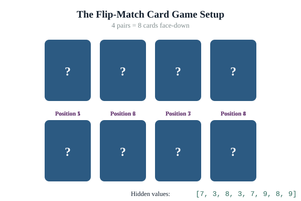
On your first move, you have no information at all. You pick two cards. How many distinct first moves are possible? Eight choices for the first card, seven for the second — that's 56 ordered pairs, or 28 unordered. With a full 52-card deck and 26 pairs, the number is astronomical: more first moves than there are seconds in your day.
That collection of "all possible moves" is called the search space. Every AI problem can be framed as searching through one. The interesting question is how to search smartly.
Try it
Play the Memory Game demo for a minute or two. Notice that you're not searching randomly — you're using memory. That intuition is the foundation of heuristic search, which we'll get to in a moment.
Search space, constraints, heuristics
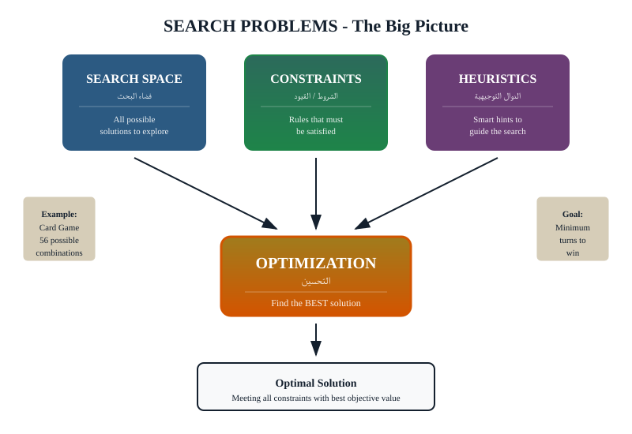
Three concepts run through every search-based AI system:
- Search space. The set of all possible states or moves. Always huge. Sometimes infinite.
- Constraints. Rules that rule out parts of the space. "The car must stay in its lane." "The schedule must not assign the same teacher to two classes at once." Constraints make the space tractable.
- Heuristics. Rules of thumb that suggest where to look first. Not guaranteed to be right, but usually good enough to make a big problem manageable.
In the card game: the search space is all possible move sequences; a constraint is "you flip two at a time"; the heuristic is "if you remember seeing a circle in position 3 and another in position 7, flip those two next." Random play would solve it eventually but slowly. The memory heuristic solves it fast.
Informed vs. uninformed search
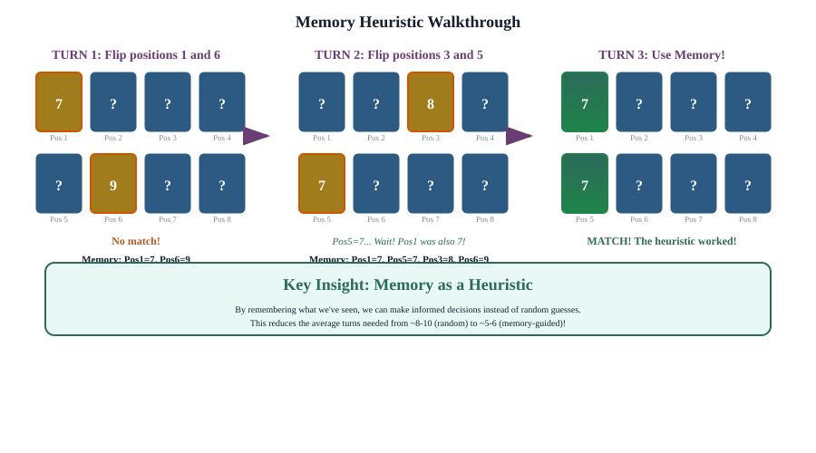
Uninformed search is search with no extra knowledge. You explore systematically — in order, in random order, breadth-first, depth-first — but you have nothing to tell you which option is more promising than another. It works. It's slow on large spaces.
Informed search uses a heuristic to focus on promising parts of the space first. The memory heuristic in the card game is a perfect example. So is "follow the river to the sea when you're lost in a forest" — you're not searching randomly, you're using a piece of background knowledge to point you in a useful direction.
See the difference
The Heuristic demo runs three strategies side by side on the same card game: random, sequential, and memory-heuristic. Watch how quickly the memory strategy pulls ahead. The same gap, scaled up, is why GPS routing works and why optimization software runs your supply chain.
Single-objective optimization
A close cousin of search is optimization: not just finding any solution, but finding the best one according to some measure. The simplest form is single-objective: one thing to maximize or minimize.
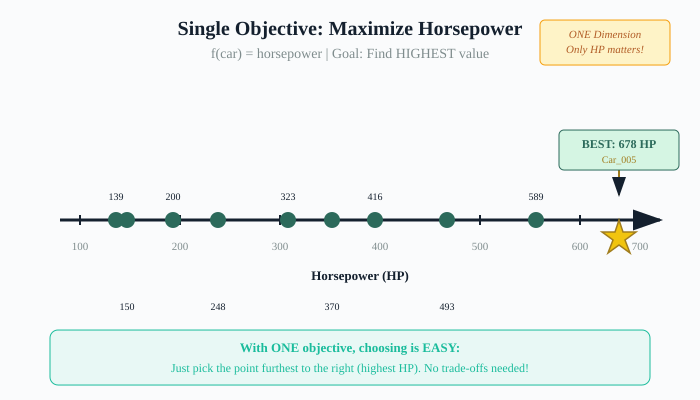
"Pick the car with the most horsepower." Trivial — just sort the list. The same approach works for any single number you're trying to maximize: revenue, accuracy, throughput, response time. Single-objective problems are easy to solve and easy to argue about, because there is one right answer.
The catch: single-objective is rarely realistic. The car with the most horsepower might also be the most expensive, or the worst on fuel.
Multi-objective & the Pareto front
Real decisions almost always involve conflicting objectives. You want horsepower and low cost. You want accuracy and low latency. You want privacy and the convenience of hosted AI.
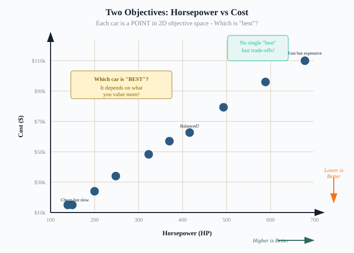
When two objectives conflict, no single car wins. Some are dominated — another car is better on both axes. Those should never be picked. The remaining cars form the Pareto front: each one is the best at some trade-off between horsepower and cost. None of them is wrong; the choice depends on which trade-off matters most to you.
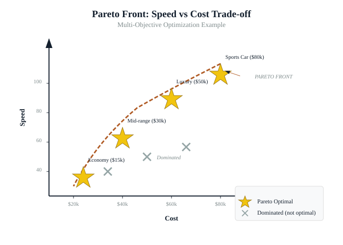
See it interactively
The Objective Function Explorer lets you adjust car parameters and watch the Pareto front update in real time. It's the same intuition you already use whenever you compare two options on cost vs. quality — just formalized.
For a leader: every AI vendor pitch involves trade-offs. When they show you only one curve ("our accuracy"), ask what they're trading off to get it. Cost? Latency? Fairness? Privacy? There is no AI system that maximizes everything at once. The Pareto-front lens helps you see which dimensions the vendor is quietly accepting losses on.
Knowledge-based systems
Khalid has a database listing parents and their children. The database knows that Khalid is Sara's father, and that Sara is Yousef's mother. You ask: "Who are Khalid's grandchildren?"
The database can't answer. There is no "grandchild" column. The information is implicit in the data — you can derive it — but the database doesn't know how. To answer that question you need data + rules.
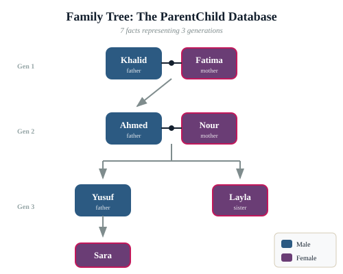
This is the core of a knowledge-based system (KBS). Three ingredients:
- Data. The facts. "Khalid is Sara's parent. Sara is Yousef's parent."
- Rules. The general knowledge. "X is a grandparent of Z if X is a parent of Y and Y is a parent of Z."
- Query. The question. "Who are Khalid's grandchildren?"
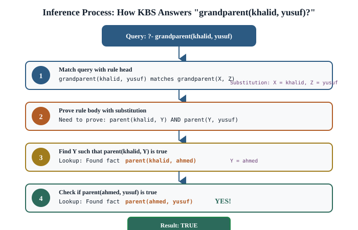
A KBS lets a machine answer the query by combining the rules with the data. This is the same style of reasoning that drove the 1980s expert systems. Strict, explainable, and ideal when the rules are crisp — not when they're fuzzy or contradictory.

Try it
The Family Tree Inference demo walks through grandparent and sibling rules step by step. Watch the rules fire, see new facts appear, and notice that a KBS can explain every answer it gives — "I concluded X because rule R fired with facts F1 and F2." That explainability is a major reason KBS is still chosen over ML for some problems.
Where KBS shows up in your world
Three concrete government-relevant uses where KBS is often the right answer, not deep learning:
Medical diagnosis support
Symptom + test-result → possible diagnoses. A clinician sees the chain of reasoning ("flagged because the patient has X plus Y, which together implicate Z") and can override. ML black boxes struggle with the explanation requirement that medicine usually demands.
Access control
"Can user U access resource R?" Encoded as rules over roles, attributes, and context. Auditable, explainable, easy to update when policy changes. The right way to handle "who can see what" in most enterprises.
Legal reasoning
Eligibility for a benefit, applicability of a regulation, qualification for a position. These are rules in a statute book. A KBS that encodes them faithfully gives you a system that produces the same answer the statute does, every time, with a citation to the rule that fired.
Practical takeaway
When a problem has crisp rules and an explanation requirement, a KBS is often a better choice than a machine-learning model — cheaper, more transparent, and easier to maintain. Don't reach for "AI" reflexively. Reach for the right kind of AI.
Three machine learning paradigms
When the rules aren't crisp, you let the system learn from data. Three flavours:
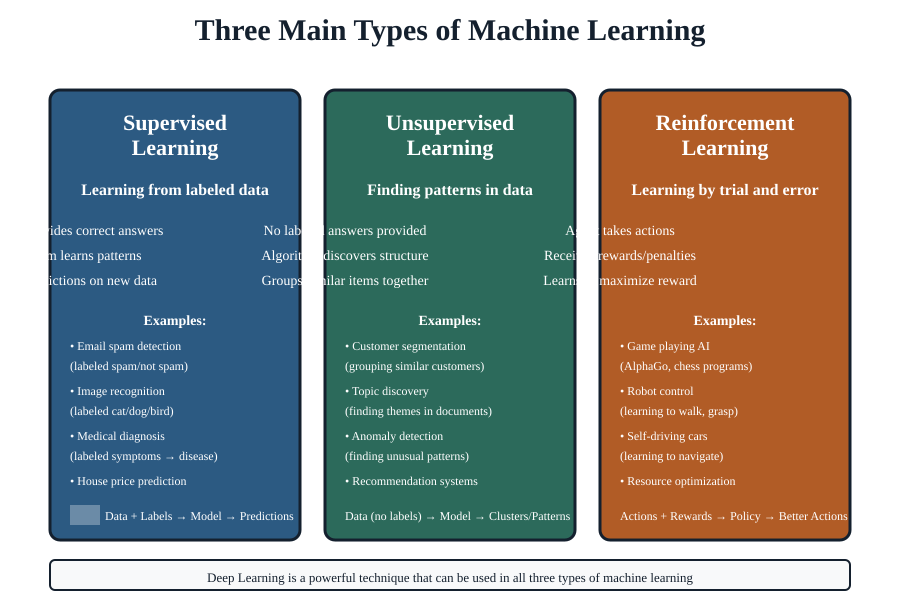
Supervised learning
You provide examples with the right answer attached. "These 10,000 emails are spam, these 10,000 are not. Learn to tell the difference." Most production ML is supervised. Excellent when you have labelled data; useless when you don't.
Unsupervised learning
You provide data without labels and ask the system to find structure. "Group these customers into segments by their behavior." Useful for exploration, customer analytics, anomaly detection. Cannot tell you whether the groups it finds are meaningful — only you can.
Reinforcement learning
You provide an environment and a reward signal. The system tries actions, sees what works, gets better. The most "AI-shaped" of the three. Famous examples: AlphaGo, robotics, dynamic pricing. Hard to deploy in domains where mistakes are costly — the system has to make many of them to learn.
Classification as decision boundaries
The most common supervised-learning task is classification: given an input, predict which class it belongs to. Spam or not spam. Fraud or not fraud. Image of a dog or a cat.
Conceptually, all classification is doing the same thing: drawing a line through a space of features such that examples on one side belong to one class and examples on the other belong to another.
See it directly
Two demos for this section. Open the Classification Demo to grab the slope and intercept sliders yourself: drag them, watch the decision line move, the accuracy update, and the misclassified count drop. Hit Step to take one gradient- descent step (the blindfolded walk you'll meet in the next section), or Auto-Fit to let the system land on a good line on its own.
Then open the ML Algorithm Comparison demo — same data, different algorithms, strikingly different boundaries. That's the central trade-off in ML, made visible.
Gradient descent — the blindfolded walk
You are blindfolded on a hilly landscape. Your job is to find the lowest point. You can't see, but you can feel which direction your foot tilts down. You take a small step in that direction, then re-feel, then step again, then re-feel. Eventually you reach a valley.
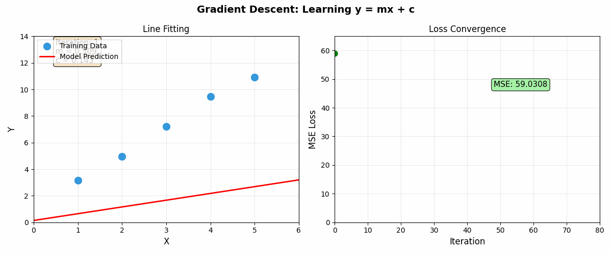
That blindfolded walk is gradient descent. The "landscape" is a measure of how wrong the model currently is — the loss function. The "lowest point" is the configuration of model parameters that minimizes loss. The "feeling which way is downhill" is computing the gradient. Every modern ML training run does this, billions of times.
Notice the connection to Module 4's optimization material: the loss function is just an objective function the model is trying to minimize. The same idea, in a different costume.
Activation functions & non-linearity
If a neural network were just a stack of linear operations — multiply by weights, add them up, multiply again — you could prove mathematically that the whole stack is equivalent to one linear operation. No matter how many layers, you'd get a single line as your decision boundary. That can't classify anything but the simplest data.
What makes deep neural networks powerful is non-linearity. After each linear step, the network applies a non-linear function — called an activation function — that bends the output. The most common are ReLU (zero out negatives, keep positives), Sigmoid (squash to between 0 and 1), and Tanh (squash to between -1 and 1).
Visualize them
The Activation Functions Visualizer lets you drag input sliders and watch each function reshape the output in real time. The intuition that comes out of five minutes with this demo is worth a chapter of explanation.
Neural networks ARE DAGs
Recall from Module 3: a directed acyclic graph (DAG) is a flow of computation where each step depends on previous steps and there are no loops. Data pipelines are DAGs. Build systems are DAGs. So is a neural network.
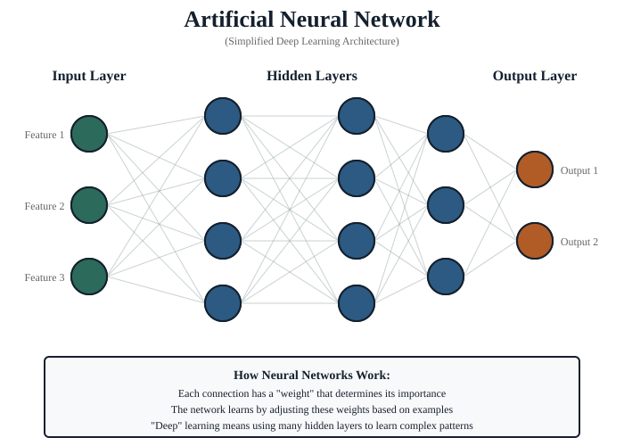
Each neuron is a node. The connections between them are edges. Data flows from inputs through hidden layers to outputs, never looping back. That is the literal definition of a DAG.
The fact that neural networks are DAGs isn't a metaphor. It's why GPUs are good at running them (DAGs parallelize beautifully, as we saw in Module 3). It's why frameworks like TensorFlow and PyTorch use DAG-style "computational graphs" internally. And it's why a Module 3 concept (parallel pipelines) shows up again in Module 4 (deep learning) — same shape, different application.
Backpropagation in plain English
Training a neural network means adjusting all those edge weights so the output gets closer to the right answer. Backpropagation is the algorithm that figures out, for each weight, "if I change you a little bit, will the answer get more right or less right?" It works by walking the DAG backward from the output to the inputs, propagating blame for the error to each weight along the way. Combined with gradient descent, that's how a network learns from its mistakes.
Layered abstraction
The most beautiful thing about deep neural networks — and the reason they work on tasks like image recognition that defied 50 years of hand-crafted approaches — is that successive layers learn successively more abstract features.
In an image-recognition network:
- Layer 1 learns to detect edges.
- Layer 2 combines edges into shapes: corners, curves, blobs.
- Layer 3 combines shapes into parts: an eye, a wheel, a doorway.
- Layer 4+ combines parts into objects: a face, a car, a building.
Nobody told the network what an "eye" or a "wheel" is. The hierarchical abstraction emerged from many millions of training examples and the gradient-descent-over-a-DAG mechanism. That emergence is the heart of why deep learning is different from earlier approaches.
Generative AI
Until 2017, AI recognized things. Since 2020 or so, a new wave of AI generates things — text, images, video, code. The technology behind almost all of it is the Transformer, a neural-network architecture introduced in a 2017 paper called "Attention Is All You Need."
How an LLM works, in one paragraph
A Large Language Model is trained to predict the next word in a sequence. Given "The capital of Saudi Arabia is", it should output "Riyadh." Trained on essentially the entire public internet, doing this prediction trillions of times, the model develops internal representations of grammar, facts, reasoning patterns, code structure, and the patterns of essentially every kind of human writing. To generate text, the model just keeps predicting the next word, feeding its own output back as new input, until it decides to stop. That is all that ChatGPT and Claude are doing — very fast, with very large internal representations.
How image generation works
The dominant approach is the diffusion model. Imagine starting with a picture of pure noise and training a network to slowly remove the noise, step by step, until a real image appears. Steer the de-noising with a text prompt and you get an image that matches the prompt. Tools like Midjourney, DALL-E, and Stable Diffusion all work this way.
What they can and cannot do
What they're good at
- Generating fluent prose in any genre and tone.
- Summarizing long documents.
- Translating between languages with surprising quality.
- Drafting and editing structured text (emails, memos, briefs).
- Writing and explaining code in dozens of languages.
- Generating images and videos that look professional.
What they're bad at
- Knowing whether what they wrote is true (hallucination).
- Math, especially when small precision matters.
- Counting, dates, source citations — check these manually.
- Anything from after their training cutoff — they don't know it.
- Reasoning step-by-step over long, novel problems.
- Promising they "won't" do something they were just trained on patterns of doing.
Hallucination — the headline failure mode
The model has no internal "I don't know" signal. When asked something it doesn't know, it produces output that looks like it should be the right answer — same tone, same shape, same confidence — but is fabricated. A made-up legal citation, an invented academic paper, a confident but wrong number. This is not a bug; it's how the technology works. The fix is verification, not better prompting. We covered this in Module 2 and you should hear it again.
Costs
LLMs are not free. Every query costs the provider compute time, and they pass that cost on to you per-token (roughly per-word). For a leader: when a vendor's pricing is "we'll work it out later," ask for the per-million-token cost in writing. Multiply by your expected volume. Surprises are a frequent feature of LLM-based product launches.
When NOT to use generative AI
Don't use generative AI for: legal advice (use a KBS or a lawyer), financial calculations (use a spreadsheet or a programmer), medical diagnosis (use a clinical decision system), sources you must cite (verify every reference), or anything where confidently wrong is much worse than slowly right.
From generative model to agent: the 2026 layer
Everything above describes a model that generates output when called. The 2025–2026 shift is the agent layer wrapped around it. Conceptually:
Agent = LLM + tools + memory + a loop that runs them.
The model proposes the next action; the loop executes that action against a tool (read a file, call an API, click a button); the result feeds back into the next prompt; repeat. Module 2 covered this loop in plain language; here we connect it to the model itself.
The new capability: computer use
In 2025, model providers added computer use — the ability for an agent to literally see a desktop screenshot, decide where to click, and emit mouse/keyboard events. This turned every existing application (Excel, your CRM, your browser) into something an agent can drive without an API.
- Anthropic Claude Cowork (March 2026) — controls macOS, runs as a persistent agent that keeps working when you step away.
- OpenAI Codex desktop (April 2026) — can open any app on your desktop and operate with a clicking/typing cursor.
- Browser-only agents (Operator, Comet, Nova Act) — a narrower form: drive a real browser to research, book, file, extract.
For a leader: computer-use agents make every legacy application "automatable" without a custom integration. They also dramatically expand the threat surface (Module 3) because the agent now has the same access as a human at a keyboard. Treat them like temp staff with desktop access — onboard, monitor, log, off-board.
Frontier models worth knowing by name
Names will change every few months; this is May 2026. The current frontier:
- Anthropic Claude Opus 4.6 / 4.7 — tops SWE-bench at 80.8%; the default behind Claude Code.
- OpenAI GPT-5.x family — behind ChatGPT, Codex, and Operator.
- Google Gemini 2.x and Gemma 4 — Gemma 4 is open-source under Apache 2.0, optimized for agentic workflows.
- Meta Muse Spark — competitive multimodal performance at much lower compute cost than older Llama 4 mid-size variants.
You don't need to memorize the benchmarks. You do need to recognize that "GPT-4 came out in 2023" is now ancient history; if a vendor's pitch deck references models more than six months old, ask why.
What to take away
- Search and optimization are the same idea: explore a huge space, with constraints to rule things out and heuristics to focus where to look.
- Real decisions almost always involve conflicting objectives. The Pareto front shows you the trade-off. Demand to see it.
- Knowledge-based systems are the right answer when rules are crisp and explainability matters — cheaper, more transparent, and easier to maintain than ML.
- Three ML paradigms: supervised (most common), unsupervised, reinforcement.
- Classification is drawing a line through a feature space. Different algorithms draw different lines on the same data.
- Training is gradient descent: small steps downhill on a loss landscape.
- Non-linearity (activation functions) is what lets neural networks do anything interesting beyond a single straight line.
- Neural networks ARE DAGs. The Module 3 thread returns. Same shape, same parallelism, same logic.
- Layered abstraction: each layer learns more abstract features. Edges → shapes → parts → objects.
- Generative AI — LLMs, image, video — is fluent and useful but hallucinates. Verify everything load-bearing.
- Agent = LLM + tools + memory + a loop. The 2025–2026 leap is wrapping the generator with a loop that can act. Computer-use agents extend that loop to the desktop. Treat them like temp staff with full keyboard access.